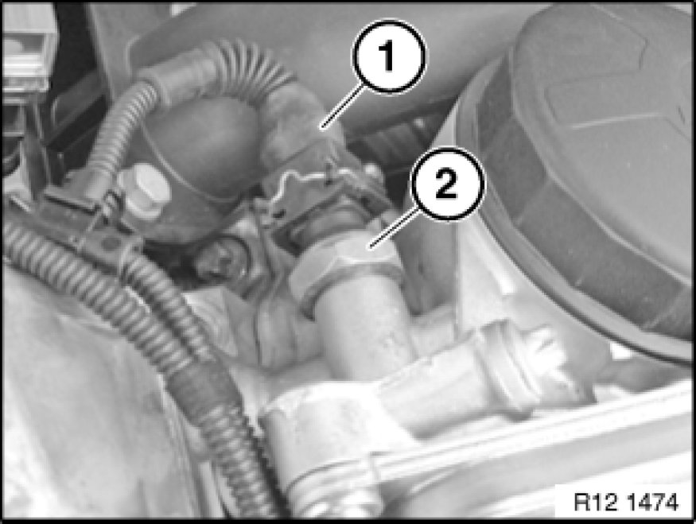

Oil Pressure Sensor: Service and Repair
12 61 280 - Removing and installing/replacing oil pressure sensor (N52/N52K/N51/N54/N53)

Necessary preliminary tasks:
- Switch off ignition
- N52, N52K, N51, N53 only:
- Remove ignition coil cover
- N54 only:
- Remove intake filter housing

Warning!
Scalding hazard!
Only perform this task on an engine that has cooled down.

Installation location:
Oil filter housing, front left.
Engine oil may emerge when oil pressure sensor is replaced; have a cleaning cloth ready.

Unlock plug (1) and remove.
Release oil pressure sensor (2).
Tightening torque 12 61 1AZ [1][2]12 61 Display for Oil Pressure, Oil Temperature, Oil Level Sensors / Switches.
Installation:
Check engine oil level, top up engine oil if necessary.